Detalhes - Aba Conteúdo
Para acessar a tela a aba Conteúdo, é necessatio ir ao menu:
Qualidade -> Ficha de análise -> Aba Conteúdo
A aba ‘Conteúdo’, é o local onde o usuário preenche as principais informações da ficha de análise.
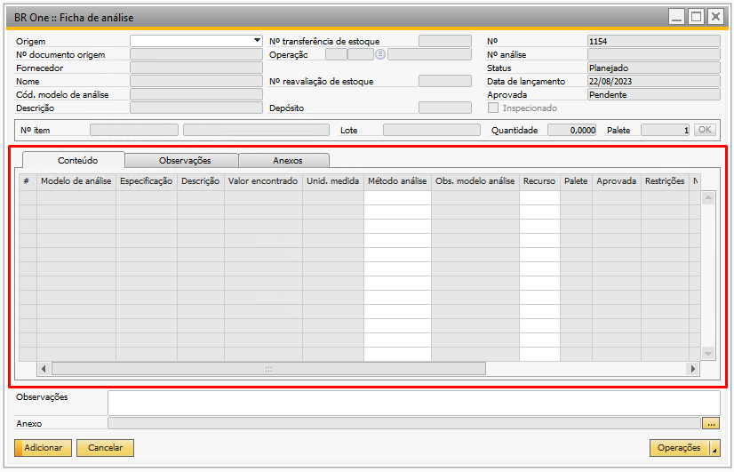{kind=link}
A coluna Modelo de análise será preenchida conforme o modelo de análise encontrado, seja no item ou na operação.
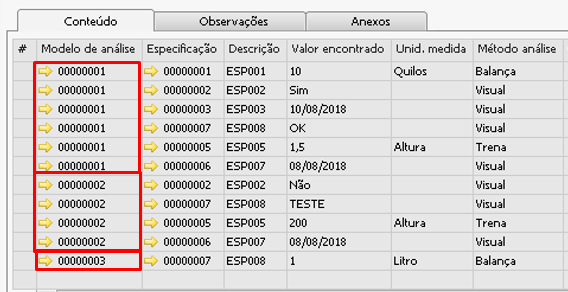{kind=link}
As colunas ‘Especificação’ e ‘Descrição’ serão preenchidas conforme o preenchimento do modelo selecionado.
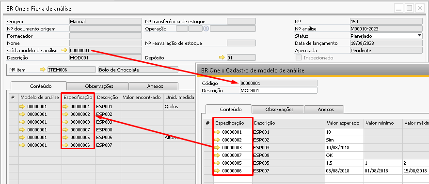{kind=link}
A Coluna ‘Valor encontrado’ ficará bloqueada para o preenchimento quando a ficha estiver com o status de ‘Planejada’, mas assim que a ficha é liberada esta coluna fica disponível para preenchimento.
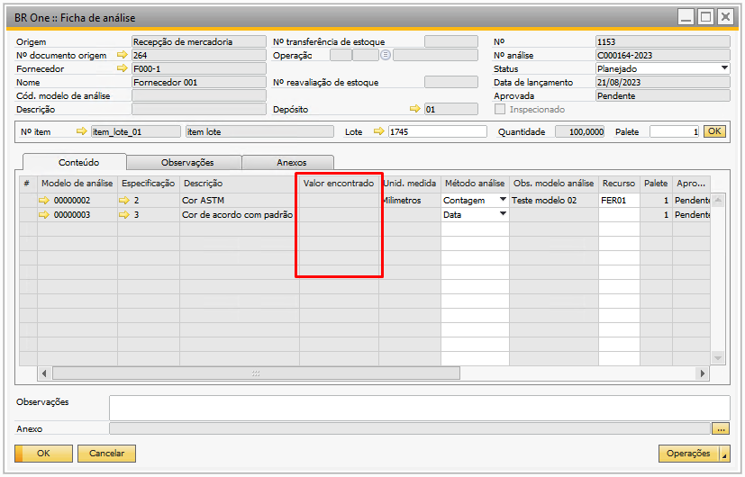{kind=link}
Quando o usuário realiza o preenchimento desta coluna para uma especificação, o sistema automaticamente irá comparar com o preenchimento da coluna ‘Valor esperado’ daquela especificação que está sendo analisada para preencher o resultado na coluna ‘Aprovada’.
No cadastro do modelo foi vinculado a especificação Ovos quebrados onde foi cadastrado que o valor esperado é encontrar um valor para o item que seja de 0 ovos quebrados, porém, foi definido um intervalo de aceitação, isso é, ao comprar ovos, em uma bandeja é esperado encontrar 0 ovos quebrados, e o máximo de ovos quebrados esperado é de 3.
Ao abrir uma ficha de análise com este modelo vinculado, na especificação ovos quebrados caso a coluna ‘Valor encontrado’ seja informado um valor no intervalo de 0 a 3 ‘Aprovada’ mudará para Sim, pois este valor encontrado para a especificação está dentro do valor mínimo e valor máximo.
Caso seja um valor acima de 3 está fora do intervalo definido como valor aceitável e mudará a coluna ‘Aprovado’ para não. Acompanhe a simulação a seguir:
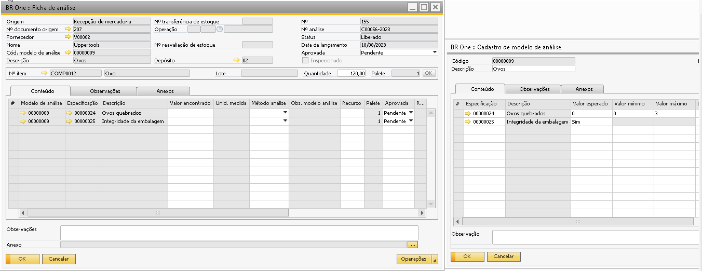{kind=link}
O campo ‘Unid. de medida’ na ficha de análise será preenchido conforme o cadastro do modelo de análise.
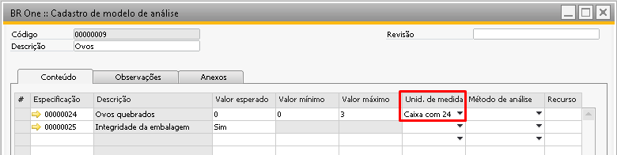{kind=link}
O campo Método de análise será preenchido na ficha de análise conforme o preenchimento do Modelo de análise, mas pode ser alterado manualmente na ficha.
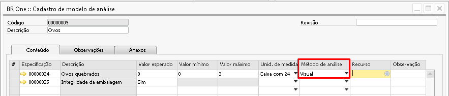 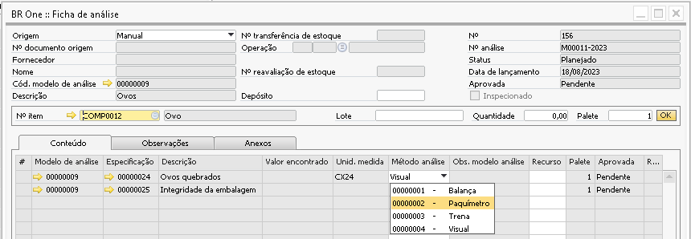{kind=link}
{kind=link}
O campo ‘Obs. modelo de análise’ também terá o preenchimento realizado conforme o que está no modelo de análise este campo de Observação não poderá ser alterado.
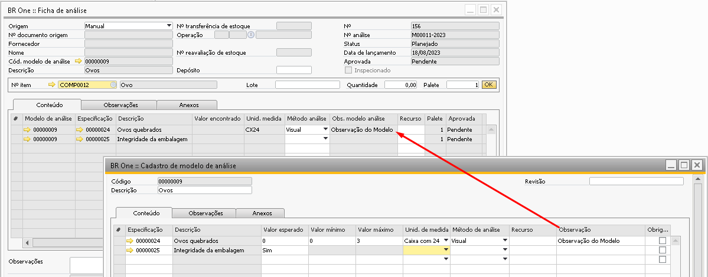{kind=link}
O campo Recurso será recuperado da linha da especificação do modelo de análise e poderá ser editado quando a ficha de análise estiver com o status ‘Planejado’ ou ‘Liberado’.
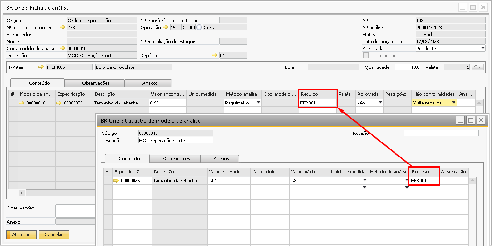{kind=link}
O campo Palete será utilizado quando houver a necessidade de multiplicar as linhas de análise pela quantidade de paletes.
Olhando o cenário abaixo, o usuário comprou 5 caixas com 24 unidades, dando um total de 120 unidades. Digamos que ao criar a ficha o usuário queira multiplicar a análise por quantidade de caixas é possível preencher 5 no campo ‘Palete’ e dar um ‘Ok’.
Se o modelo tem 6 linhas de especificação, as linhas serão multiplicadas por 5 dando um total de 30 linhas, separadas por paletes.
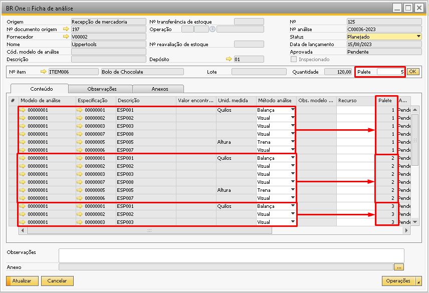{kind=link}
O campo ‘Aprovada’ como já informado acima, ele será alterado automaticamente conforme o preenchimento do campo ‘Valor encontrado’, se o preenchimento do valor encontrado estiver atendendo as informações castradas nas especificações do modelo de análise, mas pode ter o seu valor alterado manualmente.
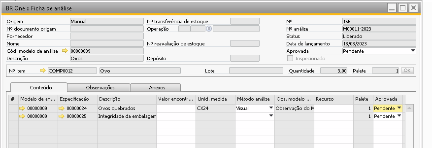{kind=link}
O campo ‘Não conformidades’ é utilizado para informar a não conformidade da linha da especificação. Ao preencher o campo todas as não conformidades serão listadas, mas só poderá ser selecionada a não conformidade que estiver vinculada na especificação.
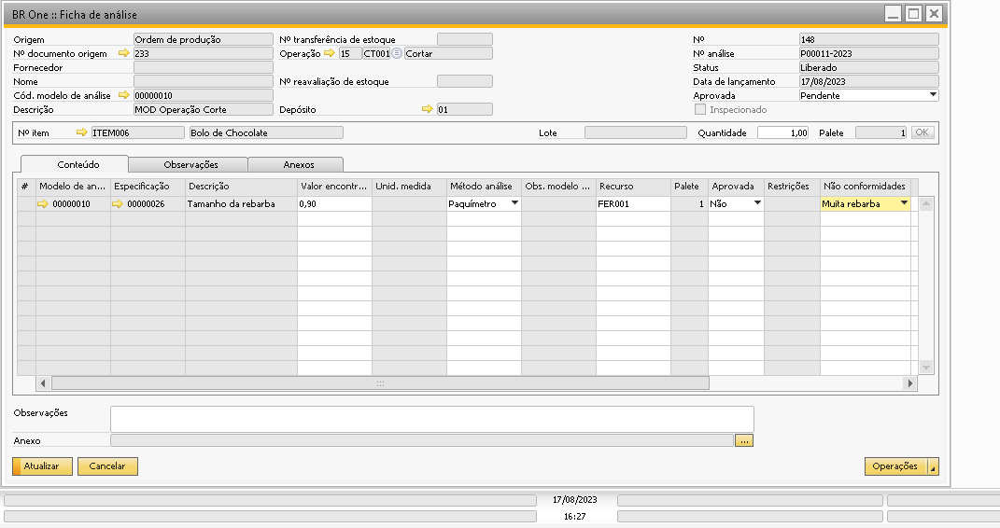O campo ‘Analista’ é usado para informar qual foi o colaborador que analisou aquela especificação da ficha pois nem sempre a análise da ficha é realizada na totalidade pelo mesmo colaborador. Só poderão ser selecionados os colaboradores onde em seu cadastro possui uma função onde o parâmetro ‘Analista de qualidade’ estiver marcado, conforme a imagem abaixo.
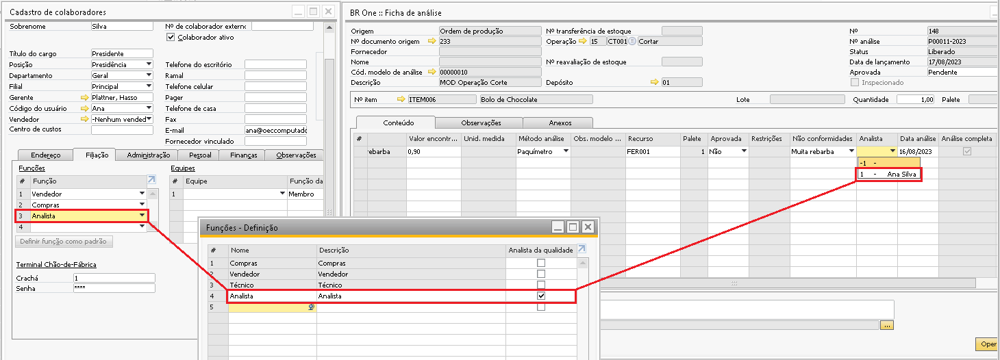{kind=link}
O campo ‘Data da análise’ é preenchido manualmente pelo usuário conforme a data em que a especificação foi analisada.
O campo ‘Observações’ fica aberto para o preenchimento manual de qualquer informação pertinente a especificação analisada e é um campo de preenchimento opcional.